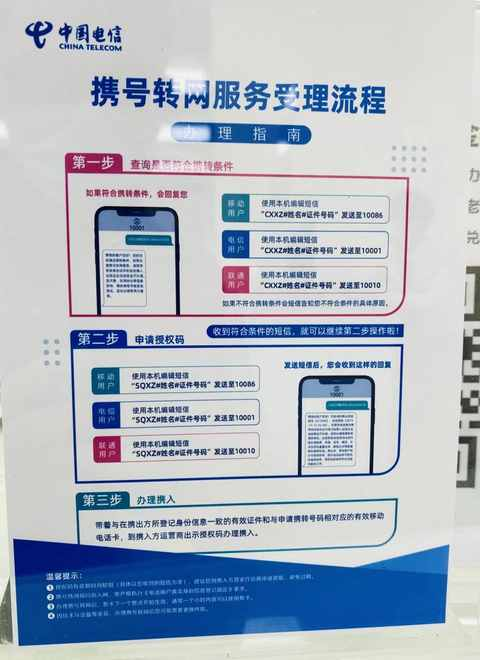
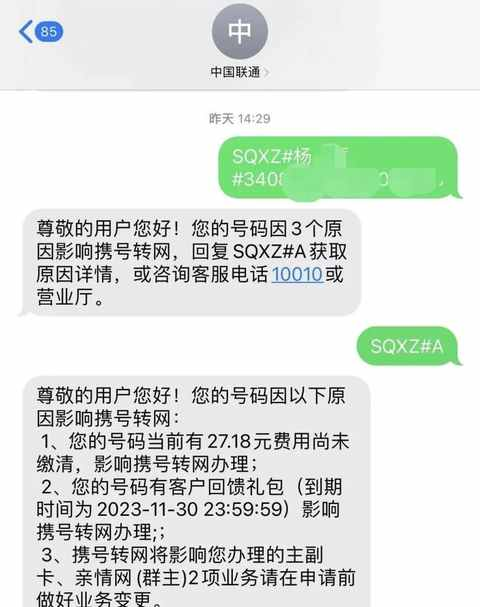
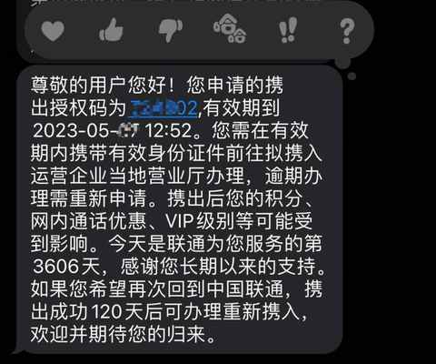
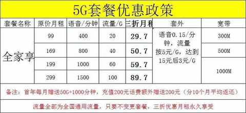
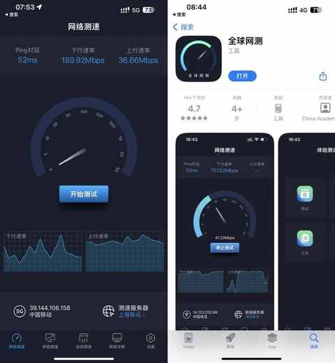
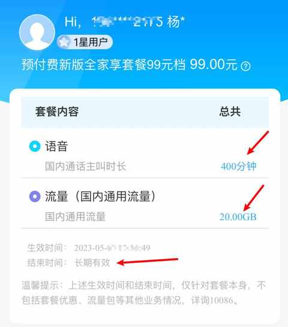

成功携号转网一年多了，聊聊办理体验与感受
- 为什么要携号转网？
1️⃣ 这个业务出来挺久，一直想体验
2️⃣ 原有运营商使用体验下降，网络不够快，在家里接电话会信号不好
3️⃣ 想升5G套餐，但老用户没有性价比的套餐可选
4️⃣ 接到移动的电话，询问是否有兴趣携号转网，有优惠活动
2. 办理麻烦吗？
不麻烦，要带好身份证 去一趟运营商的营业厅
大概步骤如下：

1️⃣ 发规定格式的短信给运营商

⭐️ 短信发送内容为：
CXXZ#姓名#证件号码
SQXZ#姓名#证件号码
2️⃣ 根据短信提示去到营业厅
一定提前查询好具体哪个营业厅有办理携号转网业务的权限，避免空跑

届时需要给到营业厅的工作人员授权码，工作人员也会顺带着询问携号转网的原因。
3️⃣ 工作人员上门办理
现场验证了身份证和人脸，拍摄了个人照片，签署了一张单子。
让我添加了一个工作人员微信，主要就是帮我办理套餐，需提供服务密码，我选择的是 99 元的版本，折后 29.7 元每个月，主要后面不换套餐就价格不变，也按指引预充值了 200 元。

4️⃣ 登录原运营商 app 办理退费
不同运营商有差别，联通这边设置的是 10 号，很顺利的就把多余的话费退掉咯
3. 网络和电话信号怎么样？
这一块必然是因人和因区域有差别，我这边整体上的使用感受比之前好。
目前一年多用下来都不错，电话没有出现要到阳台去接听的情况， 5G 的速度也不错，当时有用 app 进行测速：

除了地铁和地下室等场景，其他场景都无明显体验不好的地方。
4. 套餐内容和费用有变化吗？
没有变化，当时办理的时候也询问过，是长期套餐。

5. 套餐中附赠的宽带使用体验如何？
未使用该宽带服务。
由于所住的楼栋已经没有多余端口安装，当时和客服沟通放弃了宽带，要查询是否有端口直接打电话给客服即可，他们那边能根据地址查询到是否能安装。
后 面规则做了调整， 宽带可以是 另外的地址 ，增加了灵活性。
6. 建议携号转网吗？
如果换一个运营商能提升使用体验，完全可以试试，如果同时还能降低套餐的资费就更好。